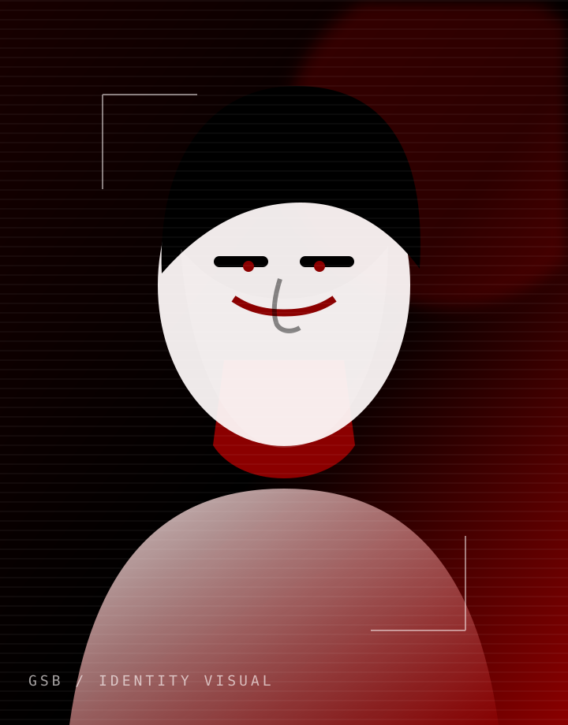
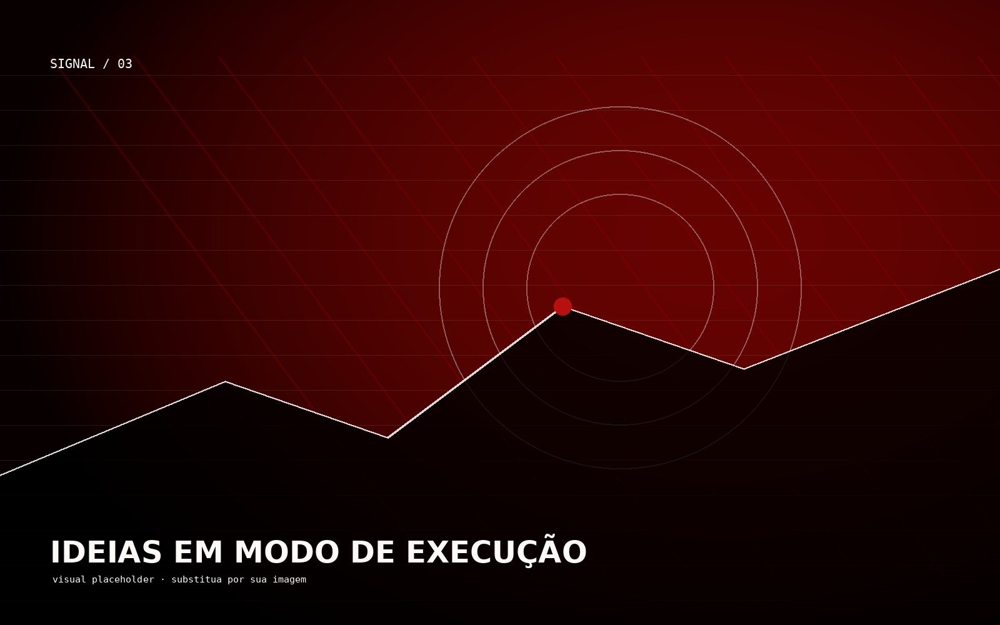
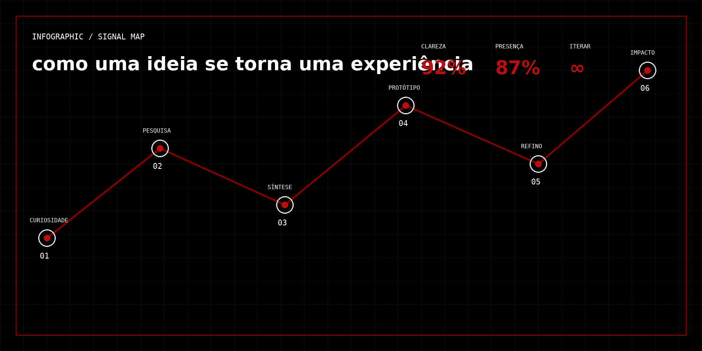

A / 01VIDEO · MANIFESTOREADY
Ideias em
movimento.
Um espaço para apresentar um vídeo de projeto, processo ou manifesto pessoal.
/video/video.mp401 / PORTFÓLIO PESSOAL
Tecnologia para transformar curiosidade em experiências que deixam rastro.

sistema / apresentação
Eu gosto de entender como as coisas funcionam — e, principalmente, como podem funcionar melhor.
Entre interfaces, código e ideias em movimento, construo repertório para transformar problemas complexos em experiências claras, úteis e com personalidade. Este espaço reúne fragmentos do processo, referências e produções que fazem parte dessa jornada.
[INSIRA SEU TEXTO AQUI]
media / collection
Uma seleção em aberto de referências, registros e experimentos. Troque os arquivos pelos seus conteúdos quando quiser.
Um espaço para apresentar um vídeo de projeto, processo ou manifesto pessoal.
/video/video.mp4Apresente uma narração, podcast ou registro de processo.

Uma área para apresentar um infográfico, mapa visual ou síntese de projeto. O enquadramento se adapta a telas menores.
/imagens/infografico.png
Insira aqui uma animação, making of ou loop experimental.
Uma apresentação visual diferente para sua produção sonora.
/musica/musica.mp3